MLOps Assignment 2 · L230518_A2_Ops
| Name | Muhammad Rahim |
| Roll number | L230518 |
| Project name | L230518_A2_Ops (GitHub, DagsHub, model registry, Vercel project l230518-a2-ops-api) |
| GitHub | https://github.com/Rebelhere/L230518_A2_Ops |
| DagsHub | https://dagshub.com/Rebelhere/L230518_A2_Ops (data, experiments, model registry) |
| MLflow tracking | https://dagshub.com/Rebelhere/L230518_A2_Ops.mlflow |
| Model API (Vercel) | https://l230518-a2-ops-api.vercel.app (GET /health, POST /predict with X-API-Key) |
| Web app | Runs on localhost (docker compose up) and calls the cloud API, as Task 7 requires |
| Graded commit | c881442eec645c22e8b4c3eec80665a5ae2148d4 |
Disclosure of AI assistance. - Claude Code (Anthropic), used as a coding assistant in VS Code. It helped me: - write and debug the Flask app, model API, Dockerfiles, Compose file, CI workflow, tests and Grad-CAM script; - plan the cloud deployment; - draft and structure this report from my terminal output and screenshots. - My own work: I ran every command, training run, experiment and deployment myself. I took the screenshots and checked every number in the report against my own outputs. - Other sources: - the official TensorFlow/Keras, MLflow, DagsHub, DVC, Docker, Vercel and LiteRT documentation; - the Kaggle dataset page.
What I did.
- I created an isolated virtual environment (python -m venv venv) with Python 3.12.10 and installed TensorFlow 2.21.0, Keras 3.15.1, MLflow 3.17.2, DVC 3.67.1, DagsHub, Keras Tuner 1.4.8, pandas, scikit-learn, Pillow and Flask.
- I froze the exact versions into requirements.txt (pip freeze).
Why. A venv keeps the project's dependency versions separate from other projects. Freezing the list makes the training environment reproducible.
Result. tf.config.list_physical_devices('GPU') returns []. TensorFlow ≥ 2.11 has no GPU support on native Windows (it needs WSL2), so all training ran on the CPU (Figure 1.1).
What went wrong. pip freeze > requirements.txt in PowerShell 5.1 writes UTF-16. Linux pip inside Docker can't read that, so I later re-saved the file as UTF-8.
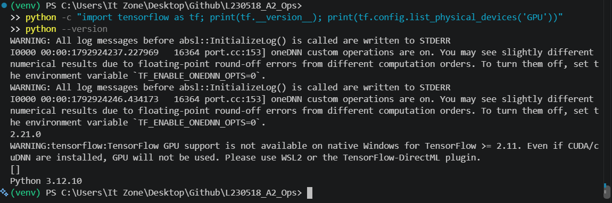
What I did. scripts/audit.py walks data/. For every file it records:
- class (taken from the folder name);
- file size, width, height, colour mode and format (read with Pillow);
- SHA-256 of the file's bytes.
The full table is reports/audit.csv. A file that fails Image.open().verify() counts as corrupt. Rows that share a hash are exact duplicates.
Results (Figures 1.2a–b):
| AI | Real | |
|---|---|---|
| Images | 539 | 435 |
| Width min / median / max (px) | 225 / 1024 / 6000 | 183 / 940 / 8495 |
| Height min / median / max (px) | 135 / 800 / 4001 | 158 / 720 / 7091 |
| File size min / median / max | 11.7 KB / 199.8 KB / 5.6 MB | 11.3 KB / 145.0 KB / 10.2 MB |
| Split | Images | AI | Real |
|---|---|---|---|
| Train | 681 | 377 | 304 |
| Validation | 146 | 81 | 65 |
| Test | 146 | 80 | 66 |
The split lists are in splits/*.csv, with path, label and hash.
Interpretation. - The classes are mildly imbalanced (55% AI), so accuracy alone is misleading. I also report precision, recall, F1 and ROC-AUC. - The colour modes are mixed. The input pipeline therefore forces 3 channels, which drops alpha and expands greyscale.
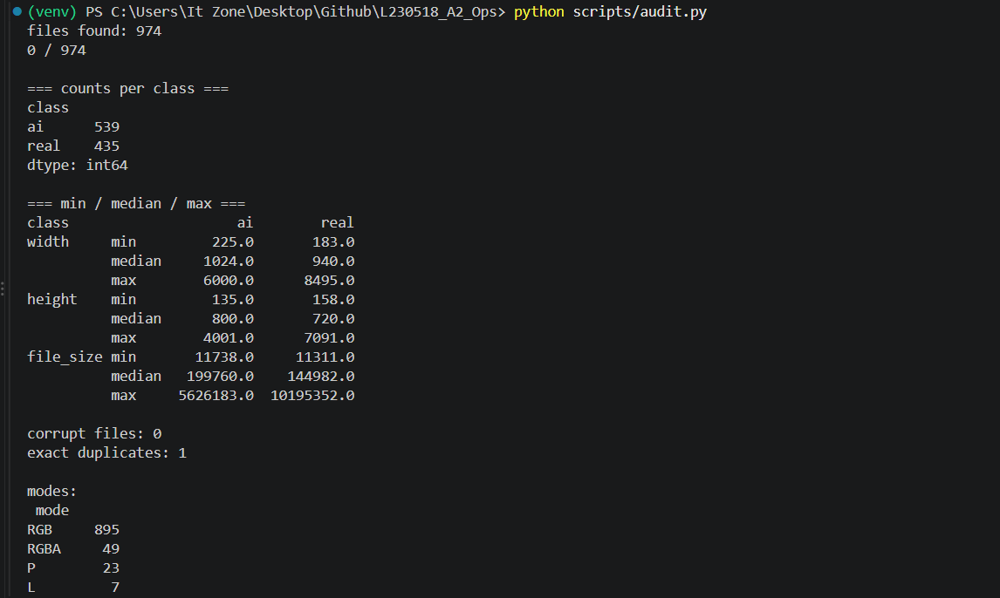 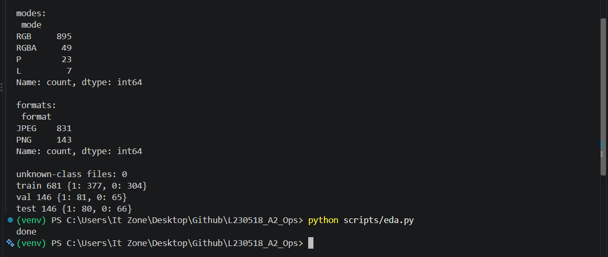
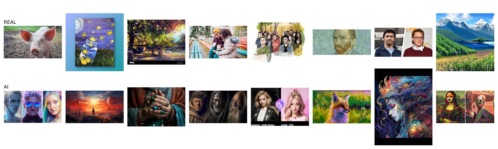
Figure 1.3a shows random samples from each class. - The "real" class is not only photographs. It also contains paintings, drawings, collages and stock-photo grids. - The AI class leans toward saturated, smooth, "digital-art" portraits and fantasy scenes.
So the model can partly learn style instead of generation artefacts, and real paintings are likely to be confused with AI art.
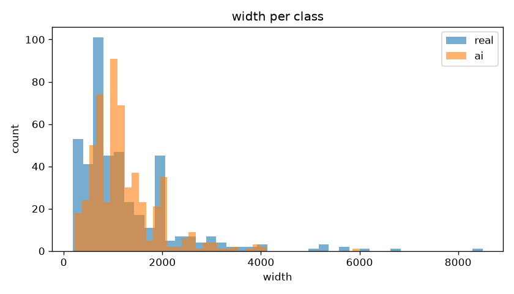 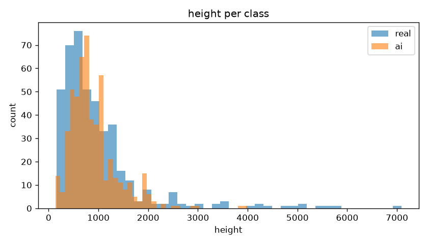 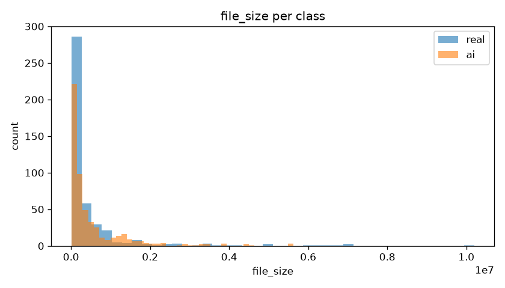
Figures 1.3b–c (width and height). - Both classes peak below 2000 px. - AI images cluster at generator-native sizes around 1024 px (and 512/2048). - Real images spread wider, with a long tail up to 8495 px.
Size alone carries a weak class signal. Resizing everything to 224×224 removes it, which is good, because a classifier should not depend on resolution.
Figure 1.3d (file size). Real files have the heavier tail (camera JPEGs up to 10 MB), while AI files are more uniform. This decided the upload limit for the web app: 5 MB, which covers about 99% of the data.
Toy part (folder dvc_toy, Figures 1.4a–h). These are the steps, in order:
1. git init and dvc init.
2. Create a 3-row data.csv, then dvc add data.csv. This creates the pointer data.csv.dvc and adds data.csv to .gitignore. Then commit (v1).
3. Append a row, run dvc add again and commit (v2).
4. git checkout HEAD~1 -- data.csv.dvc followed by dvc checkout brought back the 3-row version. git checkout HEAD -- data.csv.dvc and dvc checkout returned the 4-row version.
5. Add a local folder remote (dvc remote add -d localremote …) and dvc push.
6. Delete data.csv and .dvc/cache, then dvc pull. The pull printed "1 file fetched and 1 file added", so the file was restored from the remote.
7. Push the Git history to DagsHub (Rebelhere/L230518_A2_Ops_toy). DagsHub shows data.csv as a DVC-tracked file next to its pointer.
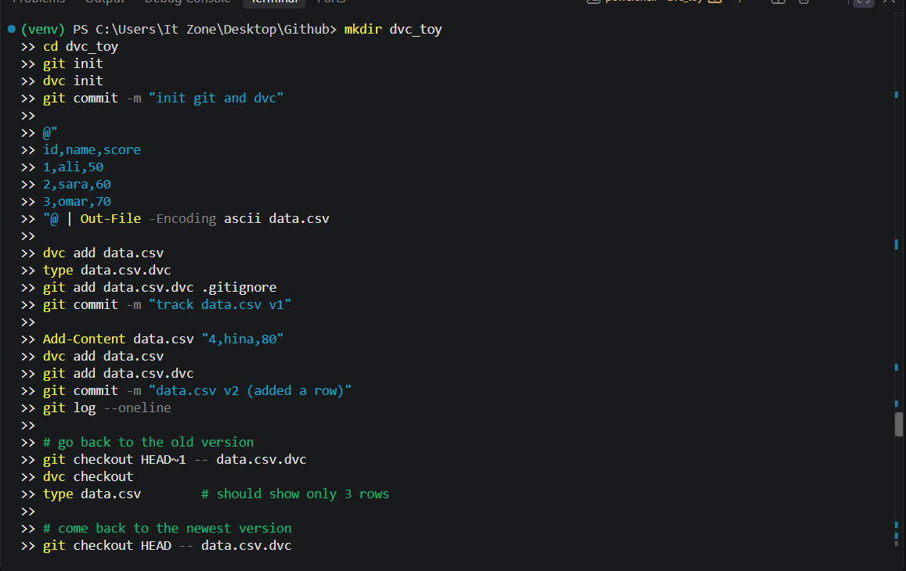 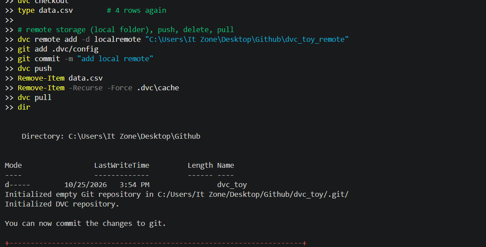 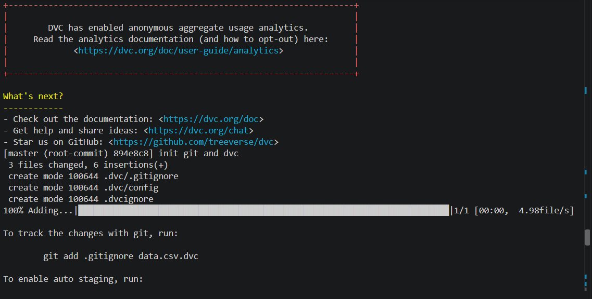 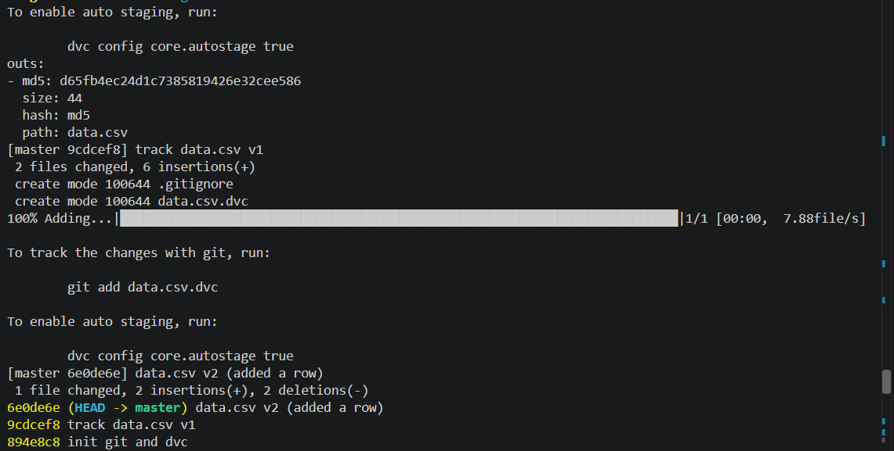 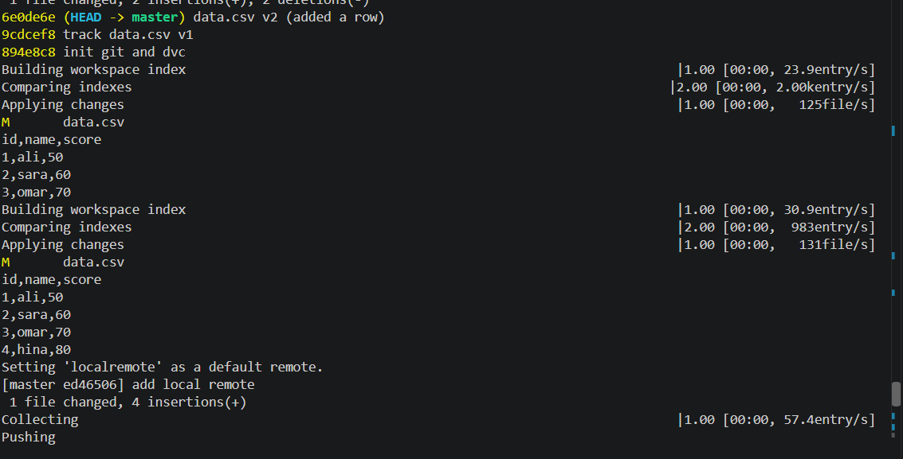 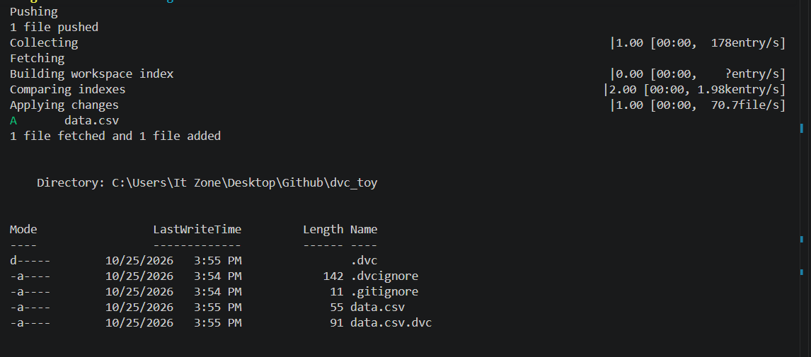 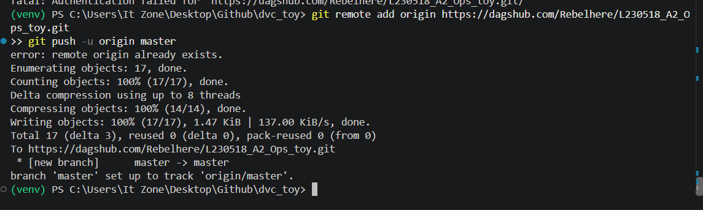 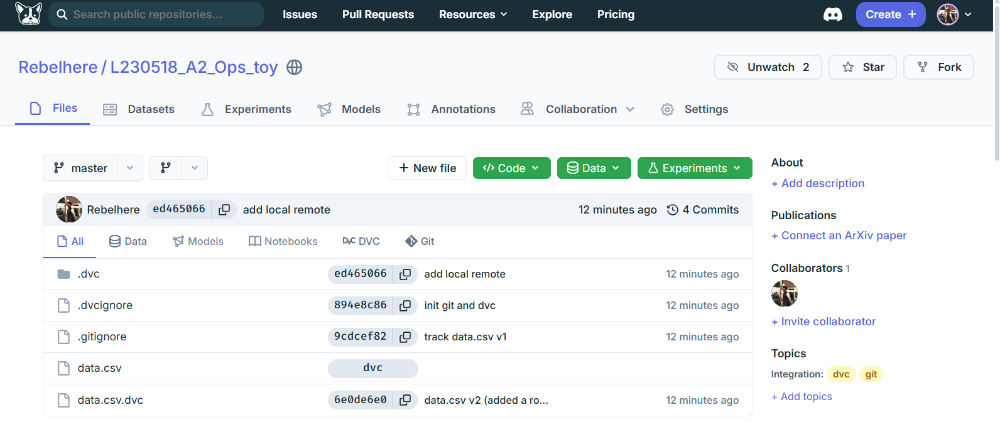
Apply.
- I tracked the whole data/ folder with dvc add data, using DagsHub storage as the origin remote.
- data.dvc (Figure 1.4i) holds the directory hash b2cec678….dir, the size (503,783,378 bytes) and the file count (975).
- dvc status -c reports "Cache and remote 'origin' are in sync" (Figure 1.4j).
- DagsHub and GitHub both show data as DVC-managed. Only the pointer is in Git (Figures 1.4k–l).
What the pointer file holds and why large data stays out of Git.
- The .dvc file is a few lines of YAML: a content hash (md5), a size, a file count and a path. The hash is the address of the real content in the DVC cache and remote, so the Git commit pins exactly which data version the code used.
- Git stores every version of every file forever and diffs them as text. A 500 MB image folder would bloat every clone, slow every operation, and exceed GitHub's size limits.
- DVC stores the data once per content hash in cheap object storage and keeps Git small.
- Every MLflow run is tagged with this hash (dvc_data_md5; see Chapter 3).
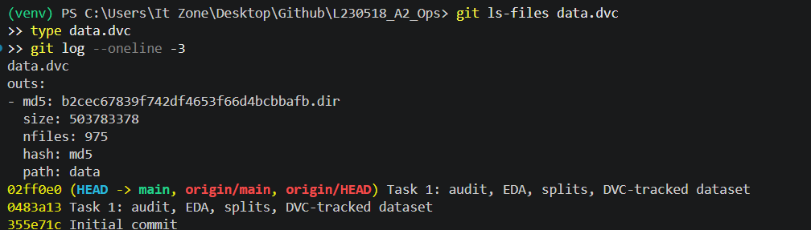 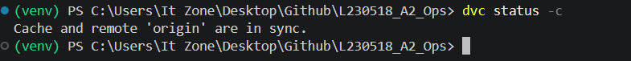 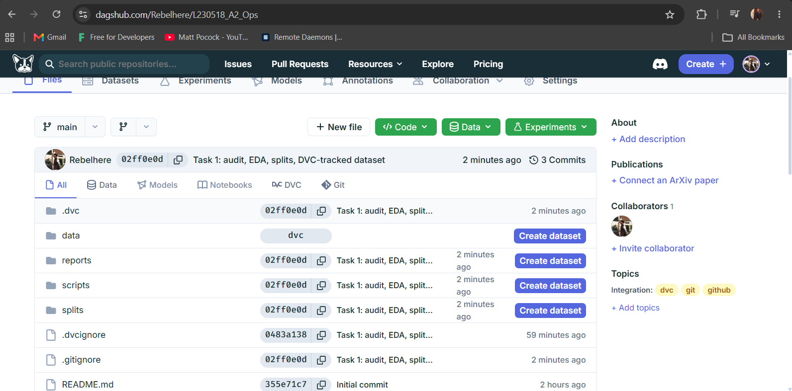 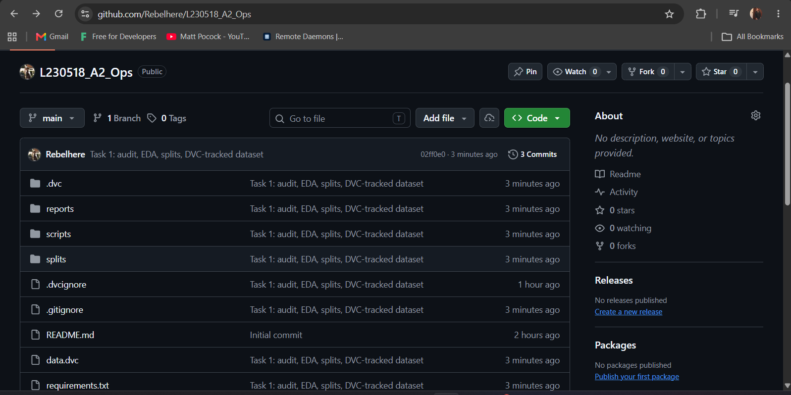
src/data.py::make_ds builds a tf.data pipeline. The stages, in order:
1. Read split list. from_tensor_slices((paths, labels)) reads the paths and labels from splits/<split>.csv. Only these three lists are used, so no image can leak between splits.
2. Decode and resize. map(_load, AUTOTUNE) calls src/preprocess.py::decode_resize:
- tf.io.decode_image(channels=3, expand_animations=False) handles both JPEG and PNG, forces 3 channels (drops alpha, expands greyscale and palette), and takes the first frame of a GIF-like file.
- tf.image.resize makes the image 224×224 with bilinear interpolation, as float32 values in [0, 255].
3. Cache. cache() keeps the decoded images in memory after the first epoch. Decoding 5–10 MB JPEGs is the most expensive step.
4. Shuffle. shuffle(len, seed=42, reshuffle_each_iteration=True) runs on training data only.
5. Augment (training data only): RandomFlip("horizontal"), RandomRotation(0.08), RandomZoom(0.15) and RandomContrast(0.15). These perturbations are mild, so they don't destroy the high-frequency artefacts that separate AI images from real ones.
6. Batch and prefetch. batch(32) then prefetch(AUTOTUNE) lets the CPU prepare the next batch while the model trains on the current one.
Image size. - 224×224 is the native ImageNet input of MobileNetV2, so the pretrained filters see objects at the scale they were trained on. - It is also small enough for CPU training.
Aspect ratio.
- tf.image.resize stretches the image; it does not keep the aspect ratio. A 1024×576 image is squeezed horizontally.
- I chose stretching over crop or pad because cropping can cut off the part of the image that shows the artefact, and padding adds black borders the model could learn to use.
- The same stretch is applied in serving (Chapter 4), so training and serving still agree.
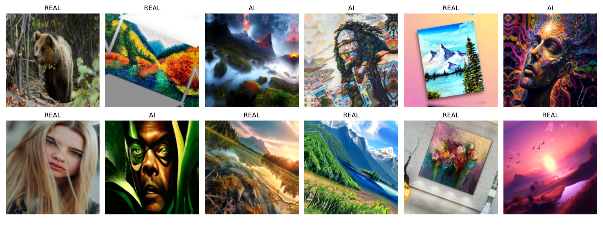
src/models.py::build_cnn (Figures 2.2a–c, table in reports/cnn_layers.csv):
| Layer | Output shape | Params | Why it is there |
|---|---|---|---|
| Input | (224, 224, 3) | 0 | raw RGB in [0, 255] |
| Rescaling(1/255) | (224, 224, 3) | 0 | puts inputs in [0, 1] so gradients are well-scaled |
| Conv2D 32, 3×3 (no bias) | (224, 224, 32) | 864 | learns local edges and texture; no bias because BN follows |
| BatchNormalization | (224, 224, 32) | 128 | stabilises and speeds up training |
| ReLU | (224, 224, 32) | 0 | non-linearity |
| MaxPooling2D | (112, 112, 32) | 0 | halves resolution, grows the receptive field |
| Conv 64 + BN + ReLU + Pool | (56, 56, 64) | 18,432 + 256 | mid-level patterns |
| Conv 128 + BN + ReLU + Pool | (28, 28, 128) | 73,728 + 512 | higher-level patterns |
| Conv 128 + BN + ReLU + Pool | (14, 14, 128) | 147,456 + 512 | |
| GlobalAveragePooling2D | (128) | 0 | one value per channel; far fewer weights than Flatten, so less overfitting |
| Dropout(0.4) | (128) | 0 | regularisation for a small dataset (681 training images) |
| Dense(1, sigmoid) | (1) | 129 | outputs p(AI) |
| Total | 242,017 (241,313 trainable) |
Loss. Binary cross-entropy is the correct likelihood for a single sigmoid output with 0/1 labels.
Optimizer. Adam at lr = 1e-3 gives robust default step sizes, so it needs no hand-tuned schedule (ReduceLROnPlateau handles the rest).
Metrics. Accuracy, precision, recall and AUC. Because the classes are imbalanced and the two errors cost differently (see 2.5), accuracy alone isn't enough. AUC measures ranking quality independently of the threshold.
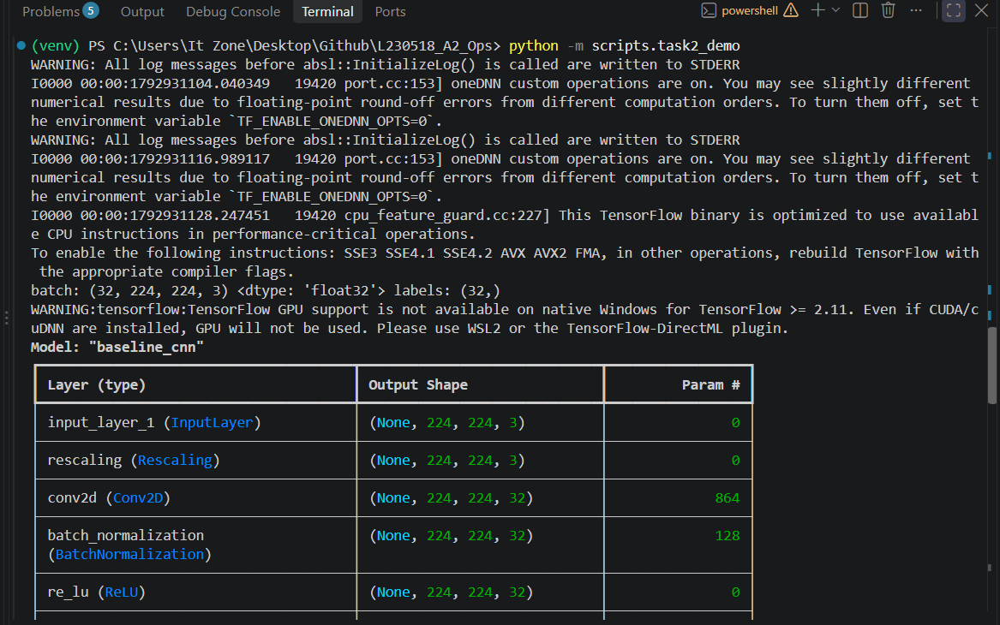 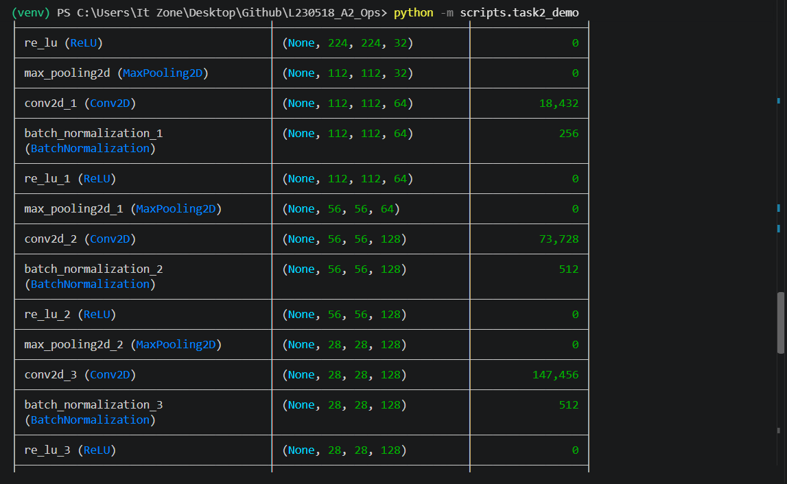 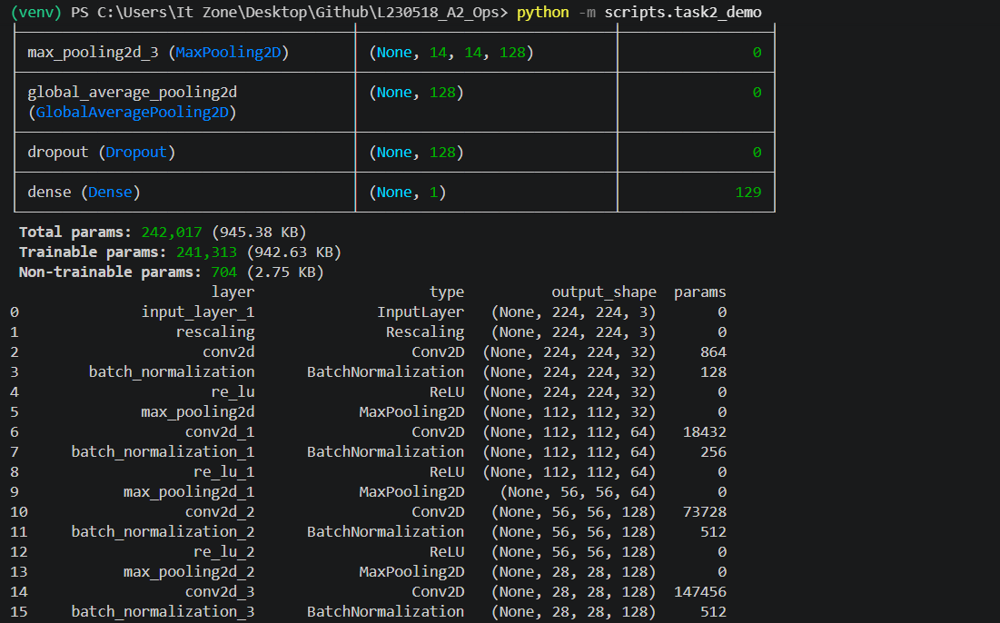
src/models.py::build_mobilenet loads keras.applications.MobileNetV2(include_top=False, weights="imagenet"), which leaves out the 1000-class classifier.
Head. GAP, then Dropout(0.3), then Dense(1, sigmoid).
Preprocessing.
- mobilenet_v2.preprocess_input maps [0, 255] to [-1, 1], which is the scaling MobileNetV2 was pretrained with. Feeding [0, 1] or [0, 255] would shift every activation, and the pretrained filters would then see "wrong" inputs.
- I put this step inside the model graph. The saved .keras file therefore contains it, and the serving code cannot forget it.
Stage 1 (frozen base).
- base.trainable = False, and the base is called with training=False so BatchNorm stays in inference mode.
- The only trainable weights are dense_1/kernel and dense_1/bias: 1,281 parameters.
- Adam lr = 1e-3, up to 15 epochs.
Stage 2 (fine-tune the last block). unfreeze_last_block sets trainable=True only for the block_16_* layers and Conv_1:
- block_16_expand, block_16_expand_relu, block_16_depthwise, block_16_depthwise_relu, block_16_project and Conv_1;
- 880,321 trainable parameters;
- BatchNorm layers stay frozen, so the small batches don't corrupt their running statistics;
- recompiled with a much smaller learning rate (1e-5 for the first runs, 1e-4 for the best one) for up to 10 epochs.
The small learning rate lets the pretrained features shift slightly toward "AI vs real" cues without erasing what they learned from ImageNet.
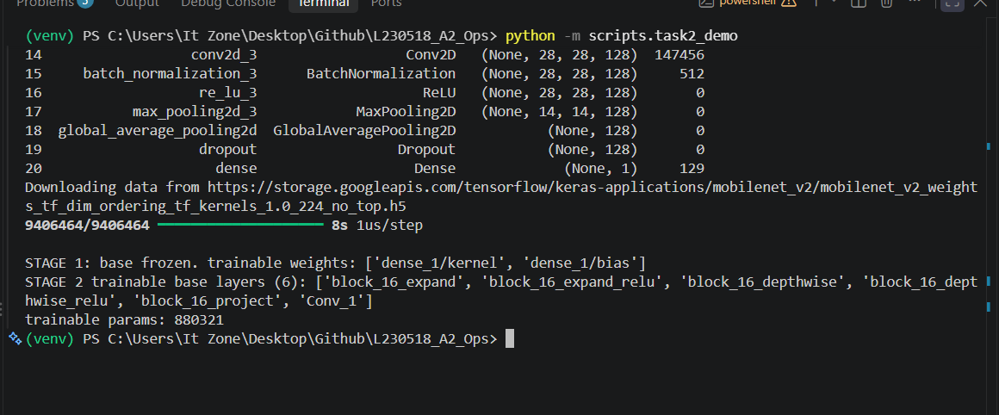 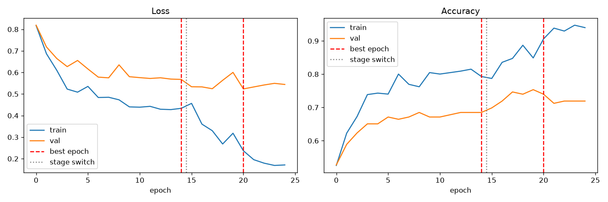 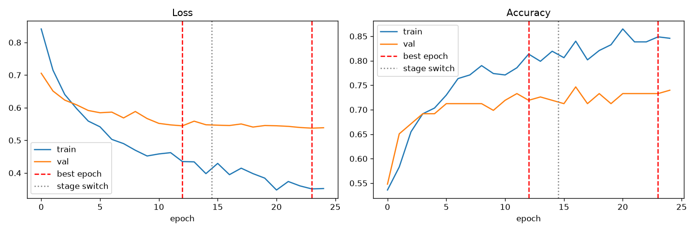
Seeds. keras.utils.set_random_seed(42) seeds Python, NumPy and TF, and the split and the shuffle also use seed 42.
Callbacks (src/train.py::fit_stage), on every stage:
- EarlyStopping(val_loss, patience=5, restore_best_weights=True);
- ModelCheckpoint(models/<run>_<stage>.keras, monitor=val_loss, save_best_only=True);
- ReduceLROnPlateau(val_loss, factor=0.3, patience=2, min_lr=1e-7).
Best epoch. The best epoch (lowest val_loss) of each stage is logged as best_epoch_stage1/2 and marked with a red dashed line in the curves.
| Run | Best epoch, stage 1 | Best epoch, stage 2 |
|---|---|---|
| mobilenet_ft_lr1e-4 (champion) | 15 (val_loss 0.568) | 6 (val_loss 0.524) |
| mobilenet_manual | 13 (0.544) | 9 (0.537) |
| cnn_baseline | 9 (0.655) | – |
Stage 1 of the champion was still improving at the 15-epoch cap; stage 2 then lowered val_loss further. The CNN overfit after epoch 9, and early stopping restored those weights.
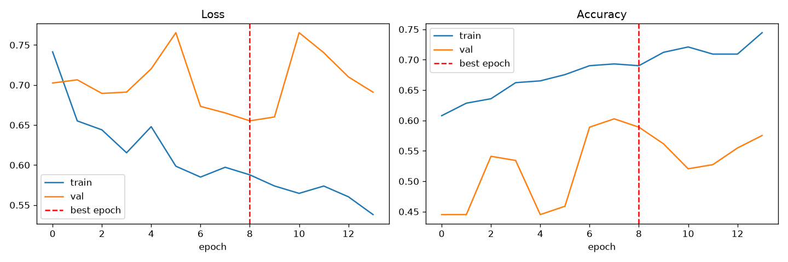
I chose the model and the threshold on validation data only. The test set was then used once for each of the two final models (scripts/final_eval.py, Figures 2.5a–c, reports/test_results.csv). The threshold in that run was the validation-F1-optimal one.
| Model (test, n = 146) | Threshold | Accuracy | Precision | Recall | F1 | ROC-AUC | TN | FP | FN | TP |
|---|---|---|---|---|---|---|---|---|---|---|
| Baseline CNN | 0.364 | 0.582 | 0.571 | 0.950 | 0.714 | 0.669 | 9 | 57 | 4 | 76 |
| MobileNetV2 fine-tuned | 0.366 | 0.788 | 0.725 | 0.988 | 0.836 | 0.870 | 36 | 30 | 1 | 79 |
Transfer learning wins on every metric. The CNN's AUC of 0.67 shows that 681 images aren't enough to learn good features from scratch.
Which error is worse. - For VisionGuard, calling a real photo fake (a false positive) is worse. It can wrongly accuse a photographer or journalist of fabrication, damage their reputation, and get real evidence dismissed. - Missing an AI image leaves the user where they were without the tool.
Threshold choice.
- The F1-optimal threshold (0.366) flags 30 of 66 real test photos as AI (FPR 45%), which is unacceptable for this product.
- scripts/threshold_table.py and scripts/pick_threshold.py scan the validation ROC curve (Figure 2.5d). They pick the threshold with the highest AI recall subject to FPR ≤ 20%, which gives t = 0.771.
- Youden's J would pick 0.836, which is even stricter.
| Threshold 0.771 | False-alarm rate (real → AI) | AI recall | Precision | Accuracy |
|---|---|---|---|---|
| Validation | 0.200 | 0.667 | 0.806 | 0.726 |
| Test | 0.182 | 0.688 | 0.821 | 0.747 |
The test false-alarm rate (18%) matches the validation target (20%), so the threshold generalised. The deployed app uses t = 0.771, read from the THRESHOLD environment variable.
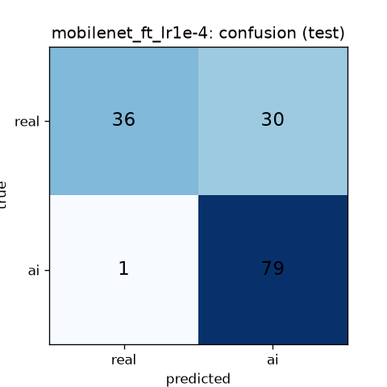 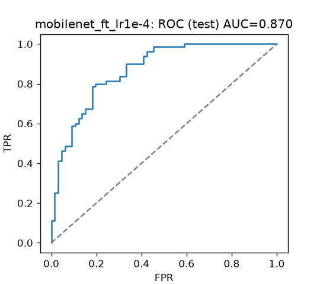 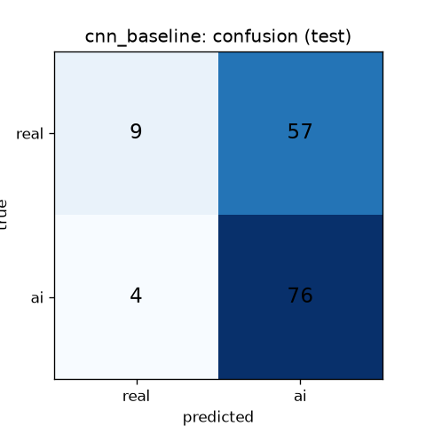 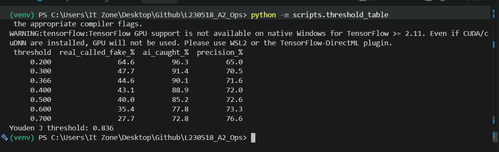
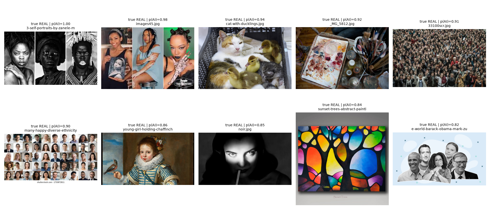
All 10 errors with the highest confidence are real images predicted as AI:
| # | Image | p(AI) | Hypothesis |
|---|---|---|---|
| 1 | 3 B&W self-portraits (collage) | 1.00 | high-contrast studio B&W with smooth skin and a stylised pose looks like AI portraits; collage seams |
| 2 | 3-photo collage with a "People" watermark | 0.98 | collage layout + heavy retouching; magazine-style beauty edits resemble AI faces |
| 3 | cat with ducklings | 0.94 | soft, shallow depth of field and "too cute" composition; downscaling hides sensor noise |
| 4 | painter's palette and brushes | 0.92 | saturated paint textures; painting-like content is common in the AI class |
| 5 | huge crowd | 0.91 | repeated faces / texture tiling, similar to the repetition artefacts of generators |
| 6 | stock grid of faces (shutterstock watermark) | 0.90 | grid of uniformly lit, retouched faces; the AI class has many portrait grids |
| 7 | painting of a girl with a chaffinch | 0.86 | a painting labelled real: style, not generation, drives the prediction |
| 8 | film-noir portrait | 0.85 | dramatic lighting and smooth gradients, typical of AI "cinematic" prompts |
| 9 | abstract tree painting | 0.84 | flat saturated colours, an artwork, not a photo |
| 10 | cut-out celebrity collage on a pastel background | 0.82 | graphic-design composite with clean edges and no camera noise |
Conclusion. The model partly learned "artistic / retouched / composite → AI". This is a dataset bias: the real class contains paintings and edited stock images. It is why the deployed threshold was raised to 0.771, and why the result page carries a caveat about paintings and edited photos.
Toy part (scripts/toy_tuner.py).
- RandomSearch with 8 trials on Fashion-MNIST (10k training images, 2k validation, 5 epochs).
- Search space: units ∈ {32, …, 256} and lr ∈ [1e-4, 1e-2] on a log scale.
| units | lr | val_accuracy |
|---|---|---|
| 256 | 1.7e-3 | 0.855 |
| 128 | 3.1e-4 | 0.845 |
| 128 | 3.5e-4 | 0.841 |
| 256 | 1.2e-4 | 0.839 |
| 160 | 1.4e-4 | 0.837 |
| 256 | 1.5e-4 | 0.837 |
| 192 | 1.2e-4 | 0.833 |
| 256 | 5.1e-4 | 0.827 |
The best settings (read with get_best_hyperparameters) are 256 units and lr ≈ 1.7e-3. For a 5-epoch budget, the learning rate matters more than width: the four slowest learning rates are near the bottom of the table.
Apply (scripts/tune_visionguard.py).
- A kt.HyperModel wraps build_mobilenet and searches three things:
- dropout ∈ {0.2, 0.3, 0.4, 0.5};
- lr ∈ [1e-4, 1e-3] on a log scale;
- unfrozen_layers ∈ {0, 10, 30, 60}, the number of last base layers fine-tuned at lr/10.
- RandomSearch ran 8 trials with the objective of maximising val_auc (6 head epochs + 4 fine-tune epochs, early stopping).
| dropout | lr | unfrozen layers | val AUC |
|---|---|---|---|
| 0.3 | 1.75e-4 | 60 | 0.773 |
| 0.3 | 3.53e-4 | 0 | 0.751 |
| 0.3 | 1.87e-4 | 60 | 0.748 |
| 0.4 | 1.10e-4 | 30 | 0.745 |
| 0.3 | 8.20e-4 | 0 | 0.741 |
| 0.2 | 2.03e-4 | 10 | 0.725 |
| 0.4 | 2.79e-4 | 10 | 0.709 |
| 0.3 | 1.09e-4 | 0 | 0.582 |
Which setting mattered most. - The number of unfrozen layers, together with the learning rate. With 0 unfrozen layers, the results range from 0.58 to 0.75 depending only on lr. The worst trial (lr 1.1e-4, frozen) simply had not converged in 6 epochs. - Unfreezing 60 layers gave the two best AUCs (0.773 and 0.748). - Dropout between 0.2 and 0.4 had no consistent effect.
This agrees with my manual runs (3.5): fine-tuning more of the network with a moderate learning rate helped most.
Why choosing the best validation score can overfit the validation set. - The validation set has only 146 images, and one image is worth about 0.7 percentage points of accuracy. - Over many trials, some configurations win partly by luck on those particular images. Taking the maximum selects that luck, which is a winner's curse: the best trial's validation score is optimistically biased. - Trials 1 and 3 had almost the same settings (60 layers, lr 1.8e-4 vs 1.9e-4) but AUCs of 0.773 and 0.748, so the noise is about the size of the gaps between trials. - This is why the test set is used only once, after all choices are made, and why the reported performance comes from the test set, not from the best validation score.
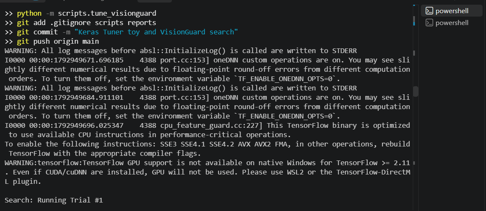 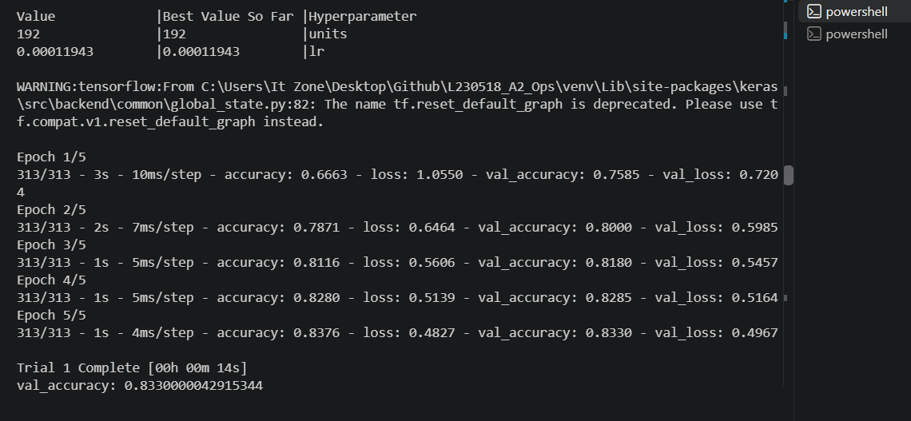 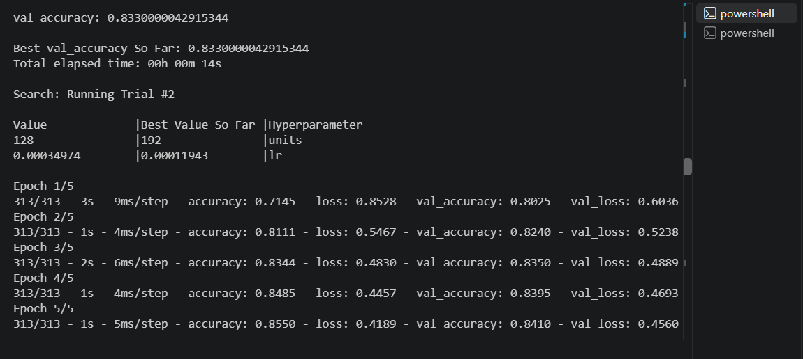 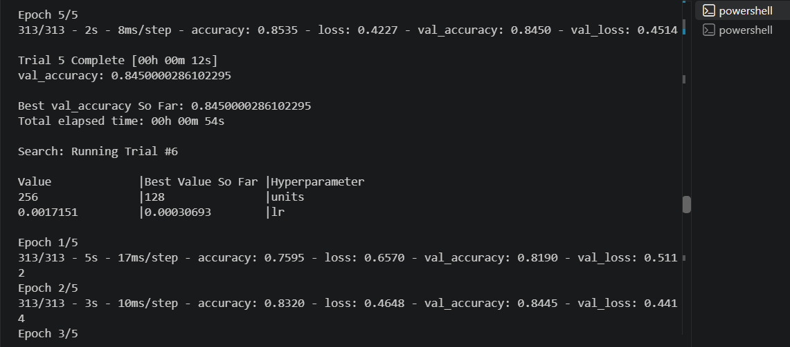 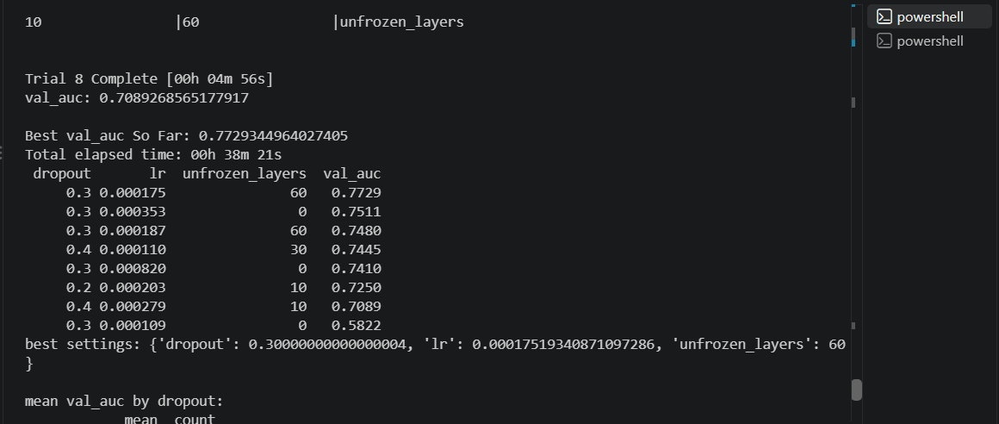 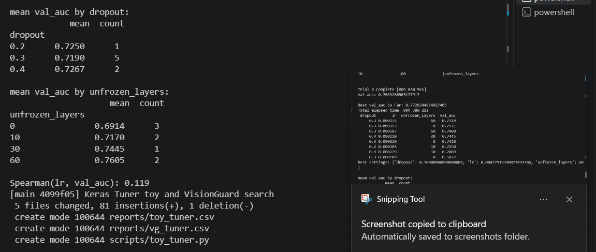
The grouped means in Figure 2.7f back up the conclusion above: - AUC rises steadily with the number of unfrozen layers: 0.691 (0) → 0.717 (10) → 0.745 (30) → 0.761 (60). - Dropout barely matters: 0.719–0.727. - Learning rate on its own correlates only weakly with AUC (Spearman 0.12) inside the searched range.
So the number of unfrozen layers mattered most.
scripts/gradcam.py computes Grad-CAM from the last convolutional block of MobileNetV2 (7×7×1280) for 4 correct and 4 wrong test predictions at t = 0.771.
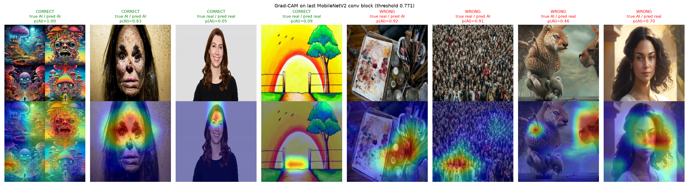
What the model looks at. - Correct AI cases. On the psychedelic collage, the heat sits on the over-detailed face with its saturated, repeated textures. On the weathered-face portrait, it covers the eyes and the unnaturally uniform skin "cracks". These are plausible generator artefacts. - Correct real cases. For the studio headshot, the evidence for AI is weak and centred on the face, so p = 0.05. For the child-style drawing, it sits on a small region at the bottom. - Real images flagged as AI. - On the paint palette (p = 0.92), the model focuses on the dense, colourful paint texture in the corner, not on any photographic flaw. - On the crowd photo (0.91), it focuses on the repeated pattern of tiny faces at the bottom.
Both confirm the hypothesis from 2.6: busy, saturated, repetitive texture is read as "AI". - AI images missed. - On the leopard (0.46), the attention spreads over the fur and the background, and nothing stands out. - On the photorealistic portrait (0.70, just under the 0.771 threshold), the attention is on the face, but the face is clean enough to pass as real.
Conclusion. - The model mostly uses texture and colour statistics in salient regions (faces, dense patterns). It is not keying on watermarks or borders, which is good. - Texture is also its weakness: real artworks and crowded scenes trigger it, and clean photorealistic AI faces escape it.
What went wrong.
- My first Grad-CAM version rebuilt the forward pass layer by layer. In Keras 3, preprocess_input is stored as a graph op inside the saved model, not as a layer in model.layers, so the rebuild skipped the [-1, 1] scaling. The heat maps looked plausible, but the probabilities were wrong (0.24 instead of 0.999 for the same image).
- I found it by comparing against the inference module's output. I now re-apply preprocess_input and assert that Grad-CAM's p(AI) equals model(x) for every image. This was a small, real example of the training/serving-skew problem discussed in 4.1.
What I did.
- scripts/toy_mlflow.py local trains a small dense network on Fashion-MNIST twice, with lr = 0.01 and lr = 1e-4. It logs to a local SQLite store (sqlite:///toy.db).
- Each run logs three parameters (lr, units, epochs), per-epoch metrics, one plot (loss_curve.png), the Keras model, and the tags stage=toy and target=local.
- mlflow ui --backend-store-uri sqlite:///toy.db opened the UI. I compared the two runs in the parallel-coordinates view (Figures 3.1a–h).
Result. lr = 0.01 reached accuracy 0.854 / val 0.824 in 5 epochs; lr = 1e-4 reached 0.791 / val 0.798. The small learning rate is still under-trained after 5 epochs.
Definitions (my own words):
- Experiment: a named folder that groups runs trying to solve the same problem (toy-fashion-mnist, VisionGuard).
- Run: one execution of the training code, with a unique id, start time, status and source commit.
- Parameter: an input I chose before the run that does not change during it (learning rate, dropout). It is logged once.
- Metric: a number measured by the run, possibly many times with a step (val_loss per epoch, final test F1).
- Artifact: any output file stored with the run (plots, split lists, pip_freeze.txt, the model).
- Tag: free-form key/value metadata about the run (git commit, data hash, seed, "manual" vs "autolog"). It is used to search and filter runs.
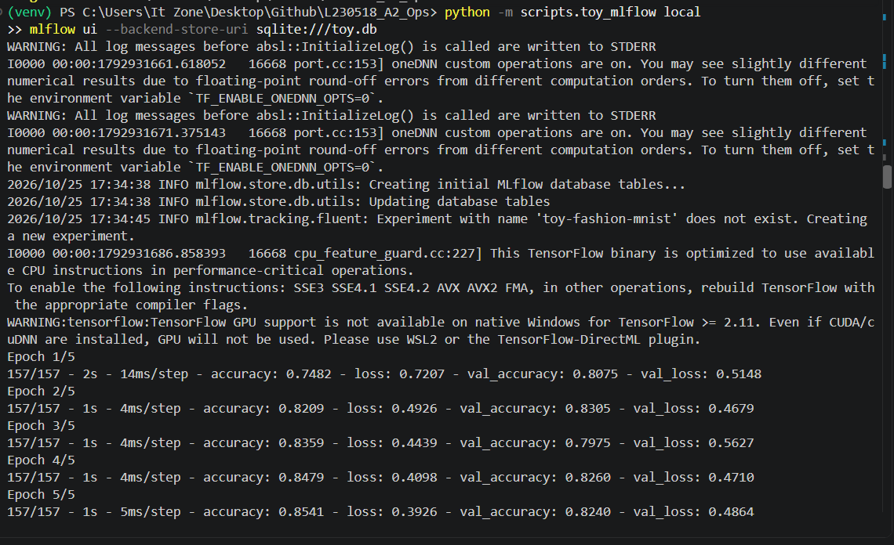 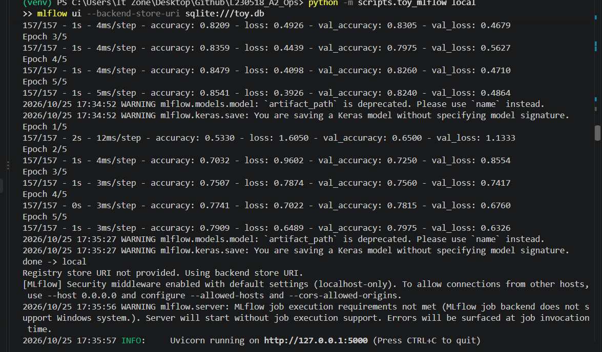 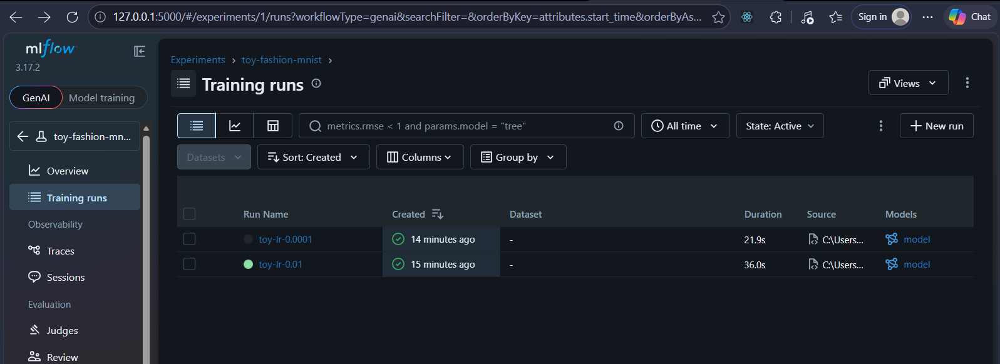 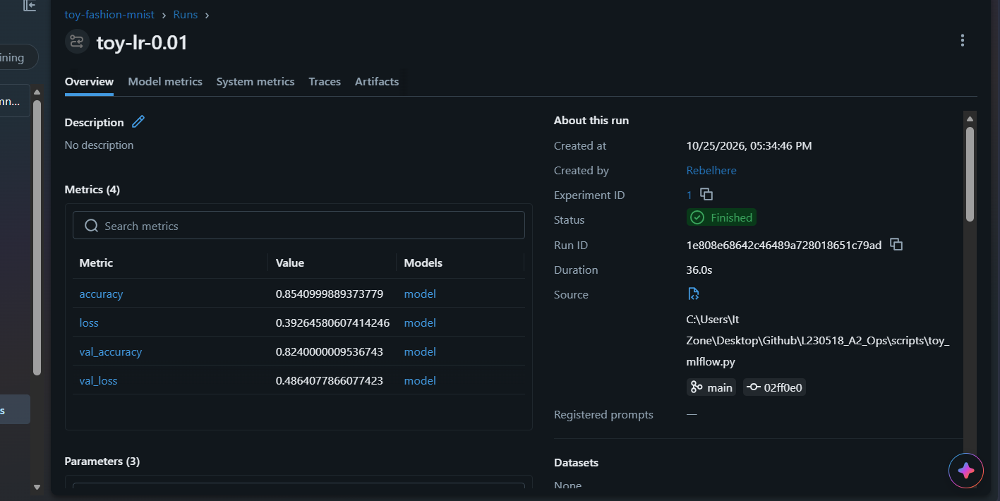 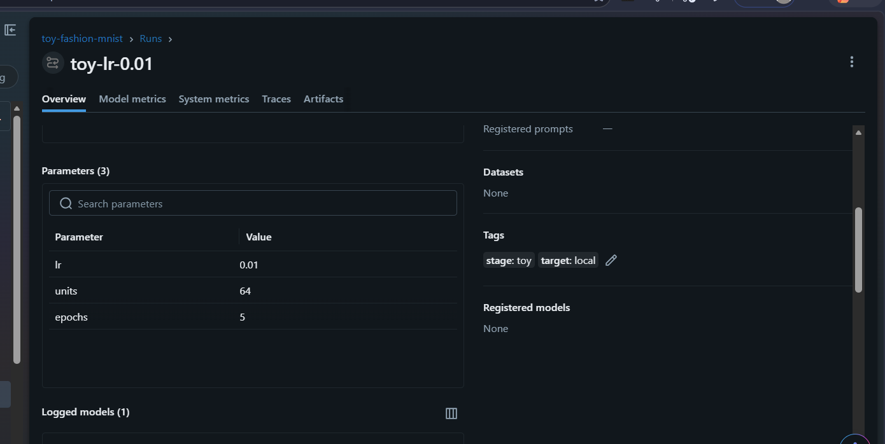 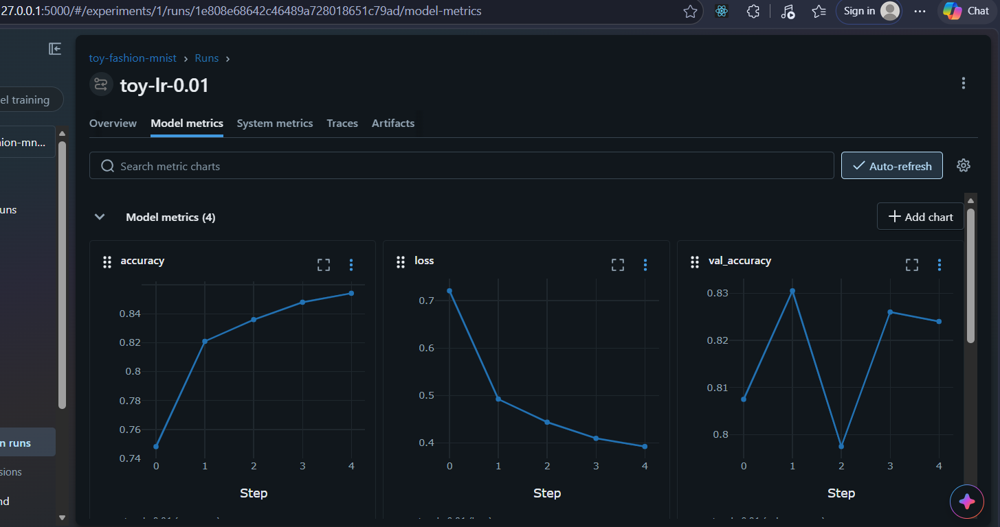 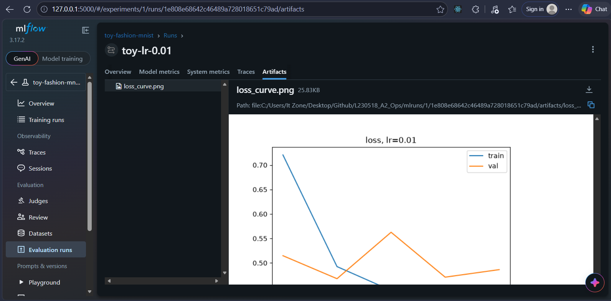 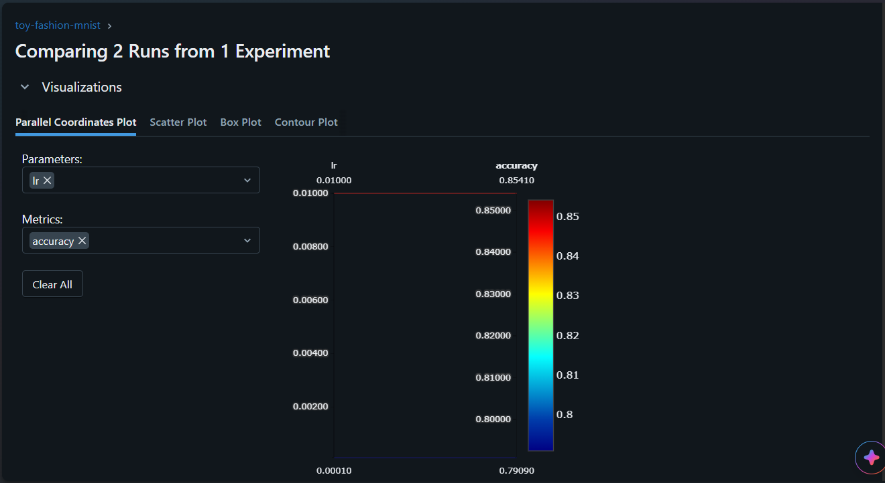
What I did.
- The DagsHub repository Rebelhere/L230518_A2_Ops is connected to the GitHub repository (Figure 1.4k). Its MLflow tracking address is https://dagshub.com/Rebelhere/L230518_A2_Ops.mlflow.
- I created a DagsHub access token and stored three values only in .env:
- MLFLOW_TRACKING_URI,
- MLFLOW_TRACKING_USERNAME,
- MLFLOW_TRACKING_PASSWORD (the token).
- The code calls load_dotenv(), and MLflow reads these variables automatically, so no credential appears in source code.
- .env is git-ignored: git check-ignore -v .env → .gitignore:2:.env, and git status doesn't list it (Figure 3.2a). .env.example documents the variable names without values.
- I repeated the toy run against DagsHub (Figure 3.2b).
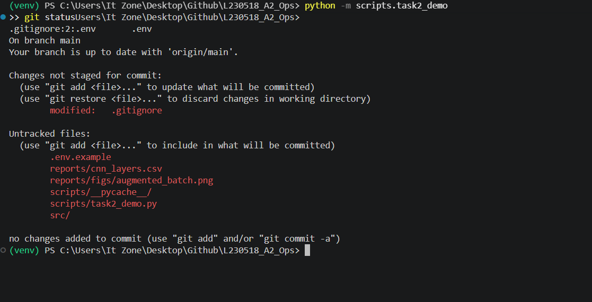 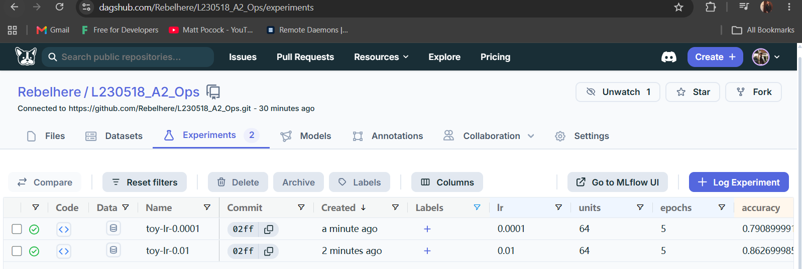
src/train.py logs every run to the VisionGuard experiment:
- Tags:
- git_commit (from git rev-parse HEAD);
- dvc_data_md5 (the hash read from data.dvc, which ties the run to the exact data version);
- seed=42;
- model;
- logging.
- Parameters: every CLI argument (lr, ft_lr, dropout, epochs, ft_epochs, augmentation), plus img_size and batch.
- Per-epoch metrics: loss, accuracy, precision, recall and AUC for training and validation.
- Final metrics: best_epoch_stage*, threshold, final_val_* and, with --test, test_*.
Manual approach (--logging manual, run mobilenet_manual, Figures 3.3a–e).
- A custom Keras callback EpochLogger calls mlflow.log_metrics(logs, step=offset+epoch) at the end of each epoch.
- The step offset makes stage 2 continue on the same x-axis as stage 1.
- I decide exactly what is logged and how it is named.
Autolog approach (--logging autolog, run mobilenet_autolog, Figures 3.3f–g). mlflow.tensorflow.autolog() hooks into model.fit and captures, without any code:
- every fit argument and optimizer setting (43 parameters, e.g. opt_name=adam, opt_learning_rate, batch_size, class_weight);
- per-epoch metrics;
- a model summary;
- TensorBoard logs;
- early-stopping info.
What each approach captures or misses.
- Autolog is broad but generic.
- Every fit() call starts its step counter at 0, so the stage-2 curves overwrite stage 1 instead of continuing it (its charts show only 2 steps).
- It can't know domain values: the validation-chosen threshold, the test metrics, the confusion matrix, or the data hash.
- Manual logging is precise but only as complete as my code. It missed the optimizer internals, which autolog logged for free.
I kept both: autolog for the automatic extras, plus manual calls for the domain values.
What went wrong.
- The first autolog run failed (red ✗ in Figures 3.3h–i). Autolog tried to log the model with mlflow.keras.log_model, which failed for the nested MobileNetV2 model.
- MLflow 3 had also deprecated artifact_path there.
- I set log_models=False, wrapped log_model in try/except, and save the .keras file as a plain artifact (model_file/) as a fallback. scripts/finish_autolog_run.py completed the logging for the autolog run.
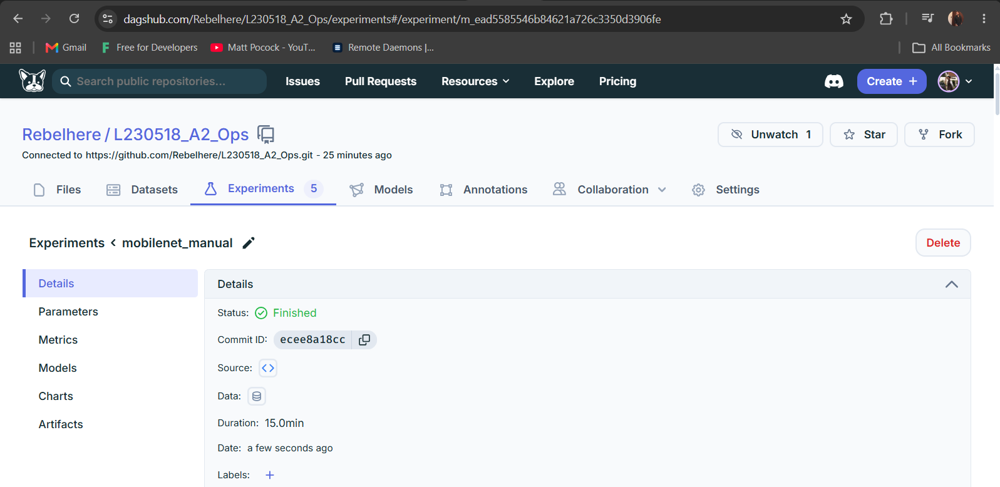
Every run attaches these artifacts (Figures 3.4a–d):
- confusion_matrix_<split>.png and roc_curve_<split>.png;
- splits/train.csv, val.csv and test.csv (the exact split lists);
- pip_freeze.txt (the package list);
- the trained Keras model (model/, or the .keras file in model_file/);
- curves.png.
The autolog run additionally has checkpoints/, tensorboard_logs/ and model_summary.txt.
I ran 7 runs (Figures 3.5a–i, reports/comparison.csv). Each differs from mobilenet_manual (head lr 1e-3, ft lr 1e-5, augmentation on, 10 fine-tune epochs) in one change:
| Run | Single change vs mobilenet_manual | val acc | val prec | val rec | val F1 | val AUC |
|---|---|---|---|---|---|---|
| mobilenet_ft_lr1e-4 | fine-tune lr 1e-5 → 1e-4 | 0.753 | 0.718 | 0.914 | 0.804 | 0.835 |
| mobilenet_manual | (reference) | 0.740 | 0.701 | 0.926 | 0.798 | 0.807 |
| mobilenet_no_aug | augmentation off | 0.705 | 0.670 | 0.926 | 0.777 | 0.803 |
| mobilenet_head_only | no fine-tuning stage (frozen base) | 0.712 | 0.689 | 0.877 | 0.772 | 0.781 |
| mobilenet_autolog | logging method only (control) | 0.692 | 0.658 | 0.926 | 0.769 | 0.779 |
| mobilenet_lr1e-4 | head lr 1e-3 → 1e-4 | 0.658 | 0.637 | 0.889 | 0.742 | 0.752 |
| cnn_baseline | backbone: MobileNetV2 → own CNN | 0.610 | 0.590 | 0.975 | 0.735 | 0.639 |
Choice: mobilenet_ft_lr1e-4. These are the metrics I consider most important, in order:
1. ROC-AUC. It is independent of the threshold. I move the threshold afterwards to control false alarms, so ranking quality is what the model itself must provide.
2. Precision. Few real photos are called fake.
3. F1.
The chosen run is best on all three. It is the only run that also improved stage-2 val_loss clearly (0.524 vs 0.537).
What each single change taught me: - Fine-tuning helps (head_only is −0.03 AUC). - Augmentation helps slightly. - A smaller head lr under-trains in 15 epochs. - A from-scratch CNN is far worse. - The autolog "control" differs from manual by 0.03 AUC with an identical configuration. That is a reminder of run-to-run noise on 146 validation images, the same effect discussed in 2.7.
What I did.
- scripts/register_models.py registered L230518_A2_Ops_VisionGuard from the runs' model files, with two versions:
- version 1 is mobilenet_manual, alias challenger;
- version 2 is mobilenet_ft_lr1e-4, alias champion.
- Each version carries the tags run_name and threshold (Figure 3.6a).
- scripts/load_champion.py <image> resolves models:/…@champion with MlflowClient.get_model_version_by_alias, downloads that version's .keras, loads it and classifies one image.
How the champion file reaches the server (and why not per request).
- scripts/export_champion.py downloads the champion once into models/champion.keras and writes champion_meta.json (version 2, run id).
- The web container mounts that folder, and the cloud API image has it built in.
- Serving therefore never calls DagsHub. A registry call per request would add seconds of latency, fail whenever DagsHub is down, and hit API rate limits.
- Promoting a new model means: move the alias, re-run the export, then restart or rebuild.
This script prints the registry tag threshold 0.366, the validation-F1 threshold stored when the version was registered. The deployed services use the stricter 0.771 chosen in 2.5, set through the THRESHOLD environment variable, so promoting a model never silently changes the false-alarm policy.
Code layout:
- app/ is the web app: the factory, routes, database and templates.
- serving/ holds the inference and validation code shared with the API.
- api/ is the cloud model API.
- wsgi.py is the production entrypoint.
serving/inference.py::Predictor (Figure 4.1):
- loads champion.keras once in its constructor;
- reads the version from champion_meta.json;
- runs one warm-up prediction.
predict(bytes) calls the same function used in training, src/preprocess.py::decode_resize (decode to 3 channels, then bilinear resize to 224×224). Then it runs the model, which contains preprocess_input internally, and returns:
- label: "AI-generated" if p ≥ threshold, else "Real";
- p_ai;
- confidence: p for AI, 1−p for Real;
- threshold, model_name, model_version and latency_ms.
Measured on my laptop: loading the model takes 36.7 s; one prediction takes about 0.3 s.
model v2 loaded once in 36.7s, threshold 0.771
…/AiArtData/…qFcGNfN66Fp4….jpeg -> {'label': 'AI-generated', 'p_ai': 0.9994, 'confidence': 0.9994, …, 'latency_ms': 337.2}
…/RealArt/…lindsey-pattison….jpg -> {'label': 'Real', 'p_ai': 0.0462, 'confidence': 0.9538, …, 'latency_ms': 268.5}
Why loading per request is unacceptable. - Every request would take about 37 s instead of 0.3 s, roughly a 100× slowdown. - Every request would re-read 17 MB from disk and re-allocate the whole TF graph. - Concurrent users would multiply the memory use and crash the container.
Loading once at start-up pays the cost one time, and every request after that is fast.
Why training and serving preprocessing must match.
- The model only learned the mapping for inputs prepared the training way.
- Typical drifts include:
- [0, 1] instead of [0, 255] scaling;
- a crop instead of a stretch;
- RGBA handled differently;
- nearest-neighbour instead of bilinear resizing.
- Any of these produces inputs the model never saw. The predictions then silently degrade (training/serving skew), and no error is raised.
- I avoid this by construction: both paths import the same decode_resize, and the [-1, 1] scaling lives inside the saved model.
| Route | Purpose |
|---|---|
GET / |
upload page |
POST /predict |
validate, predict, write a DB row, then redirect (303) to the result. The Post/Redirect/Get pattern means a refresh doesn't resubmit. |
GET /result/<id> |
result page, read back from the DB |
GET /history |
paginated history from the DB |
GET /health |
JSON health check |
Validation (serving/validation.py):
1. Wrong type. Only .jpg, .jpeg and .png are accepted, the formats the model was trained on. Anything else returns 400 "Unsupported file type".
2. Too large. MAX_CONTENT_LENGTH = MAX_UPLOAD_MB (5 MB). Werkzeug rejects larger uploads before reading them, and a custom 413 page explains the limit.
3. Looks like an image but can't be decoded. Pillow fully decodes the bytes (Image.open + load). A .jpg containing junk returns 400 "could not be decoded". The content format must also really be JPEG or PNG, whatever the extension says.
Other protections:
- File names are sanitised with werkzeug.secure_filename, so ../../evil name.png is stored as evil_name.png and can't escape a folder.
- Nothing is kept on disk. Werkzeug normally spools uploads over 500 KB into a temporary file. app/__init__.py::InMemoryRequest overrides _get_file_stream to use BytesIO, so the image only ever exists in RAM (bounded by the size limit) and is discarded after the request. Only its SHA-256 is stored.
- Friendly error pages (error.html) cover 400, 404, 413, 503 (model API down) and 500. The 500 page logs the stack trace but never shows it to the user.
- Tests. tests/test_app.py checks all three failure cases, file-name sanitising, the DB trail, /health, the 404 page and the API key (8 tests, all passing).
There are four Jinja templates extending base.html, which has a nav bar with Upload · History · Health and one stylesheet (app/static/style.css). It uses no JavaScript framework; a 5-line script shows a preview of the chosen image.
The result page shows: - the verdict ("Likely AI-generated" or "Likely real"); - the confidence; - a bar with the p(AI) position and the threshold mark; - the model name and version, where the prediction was served from, the latency and the timestamp; - an honest caveat in plain words: the model is right about 3 in 4 times, flags roughly 1 in 5 real photos, and is confused by paintings and edited images, so the user shouldn't accuse anyone on this basis alone.
The caveat numbers are the measured test results from 2.5. The layout is responsive down to phone width.
The grey bar at the top of Figures 4.2–4.4 shows the page URL and capture time. A Playwright script added it while driving my local Chrome against the app on localhost:5050 (real champion model, SQLite), because headless screenshots don't include the browser's own address bar.
Configuration. app/config.py reads every setting from environment variables: MODEL_PATH, THRESHOLD, DATABASE_URL, MAX_UPLOAD_MB, INFERENCE_MODE, MODEL_API_URL, MODEL_API_KEY, MODEL_API_TIMEOUT and SECRET_KEY. The same image therefore runs locally, in Compose or in the cloud, with nothing hard-coded, and secrets stay out of Git and out of the image.
Server.
- The app runs with python wsgi.py web, which serves the Flask app through waitress, a production WSGI server, with debug=False.
- Why not flask run --debug. The Werkzeug development server is single-process and not hardened. Debug mode exposes an interactive debugger that can execute arbitrary Python from the browser, which means remote code execution. It also reloads code and leaks stack traces.
- Why waitress. It handles concurrent requests with a thread pool and runs on both Windows and Linux.
Health check. /health returns:
{"database":"ok","inference_mode":"local","model_loaded":true,"model_version":"2","status":"ok","threshold":0.771}
The status code is 503 if the DB is unreachable. Docker uses this endpoint as the container HEALTHCHECK.
Table. app/db.py defines one SQLAlchemy table, predictions:
| Column | Answers |
|---|---|
id, created_at (UTC, indexed) |
when |
filename (sanitised), sha256 |
which image, without storing it |
label, p_ai, threshold |
what was decided |
confidence |
how confidently |
model_name, model_version |
by which model |
mode (local / remote), latency_ms |
where it ran, and how fast |
Database. In Docker it is PostgreSQL 16. Without Docker the same code uses SQLite; only DATABASE_URL changes.
The view.
- POST /predict inserts a row after every successful prediction, before redirecting.
- The History menu (/history) reads the rows newest first, 20 per page, and shows time, file, decision, confidence, p(AI), model version, where it was served and latency.
- Each row links to its result page, which is also rendered from the database.
- Rejected uploads are not stored (no decision was made), but they are logged.
Querying it directly (Figure 5b):
SELECT id, created_at, label, round(p_ai::numeric,3), model_version, mode FROM predictions ORDER BY id DESC;
After 4 local and 6 remote predictions, the same table queried directly in Postgres (docker compose exec db psql …):
id | created_utc | label | p_ai | ver | mode | ms
----+---------------------+--------------+-------+-----+--------+------
1 | 2026-10-25 19:16:23 | AI-generated | 0.973 | 2 | local | 1614
2 | 2026-10-25 19:16:36 | AI-generated | 0.960 | 2 | local | 1197
3 | 2026-10-25 19:17:02 | Real | 0.149 | 2 | local | 338
4 | 2026-10-25 19:17:13 | Real | 0.059 | 2 | local | 1018
5 | 2026-10-25 21:33:36 | AI-generated | 0.999 | 2 | remote | 40
6 | 2026-10-25 21:33:53 | AI-generated | 0.973 | 2 | remote | 57
7 | 2026-10-25 21:34:15 | AI-generated | 0.996 | 2 | remote | 23
8 | 2026-10-25 21:34:29 | Real | 0.252 | 2 | remote | 24
9 | 2026-10-25 21:34:41 | Real | 0.151 | 2 | remote | 42
10 | 2026-10-25 21:35:20 | AI-generated | 0.803 | 2 | remote | 23
(10 rows)
Each row answers what was decided (label, p_ai), when (created_utc), by which model (ver 2 of L230518_A2_Ops_VisionGuard) and how confidently. Rows survive container restarts because Postgres stores them in the pgdata volume.
I practised with the ready-made nginx:alpine image before touching my own project:
What each step shows:
- -v made my host folder appear inside the container, so editing index.html on Windows changes the page without a rebuild.
- -p 8081:80 forwarded host port 8081 to the container's port 80.
- Inside the container whoami returns root. That is the default which my own Dockerfile avoids (6.2).
Definitions (my own words):
- Image: a read-only template (filesystem + metadata such as the default command), built from a Dockerfile and identified by name:tag.
- Container: a running (or stopped) instance of an image. It is a process with its own isolated filesystem, network and process space, plus a thin writable layer on top of the image.
- Layer: each Dockerfile instruction produces a filesystem diff. Layers are stacked, shared between images and cached, so unchanged steps are not rebuilt.
- Volume: storage managed outside the container's writable layer. Data in it survives container removal (our Postgres data), or it maps a host folder into the container (our model).
- Port mapping (-p host:container): forwards a port on the host to a port inside the container's private network, e.g. -p 5000:5000 makes the app reachable at localhost:5000.
The file is Dockerfile. The order of instructions, and why:
1. FROM python:3.12-slim. It is Debian slim: about 120 MB instead of about 1 GB for the full python:3.12 image. It still uses glibc, so TensorFlow wheels install without compiling (Alpine's musl would force source builds).
2. ENV. No .pyc files, unbuffered logs, PIP_NO_CACHE_DIR, and TF log level 2.
3. Copy only the requirements files, then pip install --no-cache-dir.
- This layer is the slowest and biggest (TensorFlow).
- Docker reuses a cached layer as long as its inputs are unchanged. Because only the requirements files are copied before it, editing Python code doesn't invalidate this layer.
- A code change rebuilds in seconds instead of re-downloading about 600 MB.
4. Copy the source code last (src/config.py, src/preprocess.py, serving/, app/, api/, wsgi.py).
5. useradd app + USER app. The container runs as an unprivileged user (UID 10001). A compromise of the app would not have root inside the container.
6. HEALTHCHECK. It calls /health every 30 s, with a 60 s start period because the model takes time to load. Docker and Compose then report healthy or unhealthy.
7. CMD ["python", "wsgi.py", "web"]. It starts waitress, with debug off.
Ignore file. .dockerignore excludes venv/, data/ (500 MB), mlruns/, tuner_logs/, .git, .env and all non-champion models. This keeps the build context small and keeps secrets out of the image.
Secrets. No secret appears in the Dockerfile. Passwords and keys arrive at run time as environment variables, from Compose, or as encrypted environment variables on the cloud host.
TensorFlow package. I chose tensorflow-cpu==2.21.0 (with keras==3.15.1, the training versions) instead of tensorflow.
- The full Linux wheel bundles CUDA/GPU kernels, which the server (no GPU) would never use, and its installed size is several hundred MB bigger.
- Inference on one 224×224 image takes about 0.3 s on a CPU, which is fast enough for this product.
The file is docker-compose.yml. It defines two services:
- db: postgres:16-alpine.
- Data lives in the named volume pgdata, so history survives docker compose down and rebuilds.
- Health check: pg_isready every 5 s.
- It has no ports: section, so Postgres is reachable only on Compose's internal network and is closed from outside.
- web: built from the Dockerfile.
- depends_on: db: condition: service_healthy means it starts only when Postgres accepts connections, so it never crashes on a not-yet-ready DB.
- It reaches the DB by service name: DATABASE_URL=postgresql+psycopg://…@db:5432/…. Compose's internal DNS resolves db.
- It publishes port 5000 for the browser.
Passwords. All passwords and keys are ${VAR} substitutions read from the untracked .env. .env.example (committed) lists every variable with placeholder values.
How the model reaches the container: mounted. ./models:/models:ro (read-only bind mount). Reasons:
- The model is versioned by the registry, not by the image. Promoting a new champion means re-running scripts/export_champion.py and restarting the container, with no rebuild.
- The 17 MB model is not baked into an image that CI builds from GitHub, where models/ is git-ignored.
- Read-only means the app can't modify it.
For the cloud, the opposite choice is right, and Dockerfile.api builds the model in. That is explained in Chapter 7.
Proof that the database port is closed, and a trap I fell into.
- docker compose port db 5432 returns nothing usable ("invalid IP:0"): Compose publishes no host port for db.
- docker compose ps lists it only as 5432/tcp, with no 0.0.0.0: mapping.
- docker inspect l230518_a2_ops-db-1 confirms it: PortBindings {} and "5432/tcp": null.
However, Test-NetConnection localhost -Port 5432 returned True (Figure 6.2). From the logs and tools alone I traced why:
- netstat -ano shows PID 7268 listening on 5432.
- tasklist names it postgres.exe, which is the Windows service postgresql-x64-17, a separate PostgreSQL 17 installed natively on my laptop for another course.
- The container runs PostgreSQL 16.
So the open port belongs to a different server. The Compose database itself is only reachable on the internal network, as db:5432 from web. The lesson: a port check proves a port is open, not which process owns it.
> netstat -ano | findstr :5432 TCP 0.0.0.0:5432 LISTENING 7268
> tasklist /FI "PID eq 7268" postgres.exe (service postgresql-x64-17)
> docker inspect l230518_a2_ops-db-1 --format '{{json .HostConfig.PortBindings}} {{json .NetworkSettings.Ports}}'
{} {"5432/tcp":null}
| Image | Base | TF package | pip cache | Size |
|---|---|---|---|---|
visionguard:naive (Dockerfile.naive) |
python:3.12 (full) | tensorflow | kept | 5.92 GB on disk (1.75 GB compressed) |
l230518_a2_ops-web (Dockerfile) |
python:3.12-slim | tensorflow-cpu | none | 2.23 GB on disk (0.42 GB compressed) |
Largest layers (docker history, Figures 6.4b–c):
| Layer | naive | optimised |
|---|---|---|
pip install (TensorFlow + deps) |
2.96 GB | 1.67 GB |
| base OS (Debian full vs slim) | hundreds of MB (compilers, headers) | 87.7 MB |
| source code | 16.9 MB (COPY . ., everything) |
about 0.2 MB in 5 small layers |
Optimisation applied. A slim base, the CPU-only tensorflow-cpu wheel instead of tensorflow, --no-cache-dir, and the ignore file.
Conclusion. The image went from 5.92 GB to 2.23 GB on disk (−62%) and from 1.75 GB to 0.42 GB compressed (−76%), which is what is pulled over the network. - Almost all of the saving is in the dependency layer (2.96 → 1.67 GB): the GPU/CUDA build of TensorFlow and the pip cache are gone. - The slim base removed most of the rest.
The naive COPY . . before pip install also means any code change re-runs the 17-minute install. The optimised order rebuilds in seconds.
The everyday commands are docker compose stop / start / restart web / logs --tail 30 <svc> / exec <svc> sh. The listings for them are in RUNBOOK §6.5 (Figures 6.5c–f).
The web container stopped with exit code 137. Docker sends SIGTERM and, after the 10 s grace period, SIGKILL, because waitress doesn't handle SIGTERM fast enough. That is harmless here: every prediction is committed before its response is sent.
Deliberate failure: missing model file.
1. I renamed models/champion.keras and recreated web.
- My first docker compose logs ran before the new container had printed anything, so it showed nothing (Figure 6.5a).
- A few seconds later the container was crash-looping (Up 3 seconds, restarted by restart: unless-stopped) and the logs showed the cause.
2. Diagnosis, from the logs only (docker compose logs web):
web-1 | INFO app: database ready (db:5432/visionguard)
web-1 | Traceback (most recent call last):
web-1 | File "/srv/wsgi.py", line 18, in <module>
web-1 | app, port = create_app(), int(os.getenv("PORT", "5000"))
web-1 | File "/srv/app/__init__.py", line 21, in create_app
web-1 | app.extensions["vg_predictor"] = predictor or make_predictor(cfg) # model loaded ONCE here
web-1 | File "/srv/app/predictors.py", line 11, in __init__
web-1 | self._p = Predictor(cfg.MODEL_PATH, cfg.THRESHOLD)
web-1 | File "/srv/serving/inference.py", line 14, in __init__
web-1 | FileNotFoundError: model file not found at /models/champion.keras (run scripts/export_champion.py or mount the models folder)
The traceback ends in Predictor.__init__, which runs at start-up, so the problem is the mount or the file, not the code.
The first line shows the database connection worked, which rules out the DB.
3. Fix: restore the file (or re-export the champion), then docker compose up -d --force-recreate web. The service returned to healthy (Figure 6.5b).
I made the error message name the exact path and the command that fixes it, so that this diagnosis works from logs alone.
Toy part. The repository Rebelhere/L230518_A2_Ops_ci_toy has a workflow .github/workflows/ci.yml:
- it runs on every push;
- it uses a matrix of Python 3.11 and 3.12;
- it installs pytest and runs test_calc.py.
I changed one assertion to make it fail (red run), then fixed it (green run).
Apply. The VisionGuard workflow (.github/workflows/ci.yml) has two jobs:
- test: checkout, set up Python 3.12 with a pip cache, install requirements-app.txt + pytest + ruff, then lint with ruff check and run the tests with pytest.
- The tests use a fake predictor and SQLite, so CI doesn't need TensorFlow or the model and takes about a minute.
- docker: needs test to pass, then builds the Docker image, which proves the Dockerfile and requirements still work.
The README shows the status badge.
Where workflow secrets are stored. In the repository's Settings → Secrets and variables → Actions. They are encrypted at rest, injected only at run time as ${{ secrets.NAME }}, and masked as *** in logs. They must never be written in the workflow file. That file is committed to Git, so everyone who can read the repository (here, the whole internet) would see the secret, and it would stay in the Git history forever even after deletion. This workflow needs no secrets at all.
I tried three platforms before settling on Vercel:
- Google Cloud Run needs a billing account even for free-tier use. I created the project l230518-a2-ops (Figure 7.1a), but Google rejected my payment card, a SadaPay virtual card included (OR_BACR2_31, Figure 7.1b).
- Azure for Students needs only a university email, but sign-in failed because of a problem with my university account password.
- Vercel (the Hobby plan, signed in with GitHub, no card) is named in the assignment. It hosts the model API; Flask and the database stay on localhost, as Task 7 asks.
The obstacle: Vercel can't run TensorFlow. A Python function there is limited to about 250 MB once unzipped, and tensorflow-cpu alone is larger. There is also no persistent disk and a 4.5 MB request-body limit.
The solution: serve a TFLite copy of the champion.
- scripts/export_tflite.py exports champion.keras to a SavedModel and converts it with TFLiteConverter to champion.tflite. It stays float32 (no quantisation) to keep accuracy identical, and is 8.9 MB.
- The [-1, 1] preprocess_input op is part of the converted graph.
- The function runs it with Google's LiteRT runtime (ai-edge-litert, about 60 MB unzipped). The whole function comes to roughly 130 MB.
- serving/lite.py::decode_resize_np replaces TF preprocessing with Pillow decoding plus a NumPy port of tf.image.resize's bilinear kernel (half-pixel centres, no antialiasing).
Changing the runtime and the preprocessing is a deliberate change to the serving path. That is exactly where training/serving skew (4.1) comes from, so I measured it before deploying. scripts/check_tflite_parity.py compares, on all 146 test images (reports/tflite_parity.csv):
| Comparison | max abs Δp(AI) | mean abs Δp |
|---|---|---|
| Keras vs TFLite, same TF preprocessing (conversion only) | 3.1 × 10⁻⁶ | 5.3 × 10⁻⁷ |
| Keras + TF preprocessing vs TFLite + NumPy preprocessing (what Vercel computes) | 3.6 × 10⁻² | 4.9 × 10⁻³ |
| Same decision at t = 0.771 | 146 / 146 |
The conversion is exact. The remaining gap comes from preprocessing, and I traced it to the JPEG decoder rather than my resize code:
- Decoding with TF and resizing with my NumPy code differs from tf.image.resize by at most 0.04 pixel levels, which is rounding.
- tf.io.decode_image defaults to libjpeg's fast integer DCT, and Pillow uses the accurate one. Their pixels differ by up to 20/255.
- With dct_method="INTEGER_ACCURATE", TF matches Pillow exactly.
Both decoders are valid, and Pillow has no option for TF's fast mode. Because the effect is small (mean Δp 0.005) and never flips a decision on the test set, I accepted it and documented it, instead of shipping TensorFlow just to decode JPEGs.
The Vercel function uses the same api/main.py as the container version. Only MODEL_PATH (.tflite vs .keras) selects the runtime.
| Endpoint | Behaviour |
|---|---|
GET /health |
public: {"status":"ok","model_name":"L230518_A2_Ops_VisionGuard","model_version":"2","threshold":0.771} |
POST /predict |
header X-API-Key and multipart field image. Returns {label, p_ai, confidence, threshold, model_version, latency_ms, filename, sha256}; 401 without a valid key, 400 for wrong or undecodable files, 413 over 4 MB |
Protection.
- The key is checked with hmac.compare_digest, a constant-time comparison.
- It is stored as an encrypted Vercel environment variable (vercel env add), piped in from my untracked .env, so it is in no file and no commit.
- The API refuses to start without a key.
Model delivery. The TFLite file is bundled into the deployment, built from the registry champion via export_champion.py and then export_tflite.py. It loads once per function instance, in about 1 s instead of 37 s for Keras. Serving never calls DagsHub.
Mapping the Compose elements to Vercel:
| Compose element | Vercel equivalent |
|---|---|
image / build: |
Vercel builds the function from deploy/vercel (requirements.txt without TF + app.py, Flask framework preset) |
| service container | serverless function from app.py (WSGI app); the Flask preset routes every path to it |
environment: / .env |
project environment variables (encrypted MODEL_API_KEY; defaults for threshold and limit) |
ports: |
HTTPS domain l230518-a2-ops-api.vercel.app |
HEALTHCHECK |
/health, plus Vercel's own deployment status |
| volume for the model | model bundled into the deployment (includeFiles) |
db + pgdata |
stays on localhost with Flask (Vercel has no persistent disk) |
The commands are in RUNBOOK §7a.
1. Sign up on Vercel with GitHub, then run npx vercel login.
2. python -m scripts.export_tflite, then python -m scripts.check_tflite_parity.
3. python -m scripts.build_vercel. It copies serving/, api/main.py (as api_core/) and the model into deploy/vercel/.
4. In deploy/vercel, run npx vercel link --project l230518-a2-ops-api.
5. npx vercel env add MODEL_API_KEY production, with the value piped from .env.
6. npx vercel deploy --prod. The build takes about 50 s and the public alias is l230518-a2-ops-api.vercel.app (Figure 7.4a).
7. Check the environment variables (Figure 7.4b) and the request logs (Figure 7.4c).
API URL: https://l230518-a2-ops-api.vercel.app (/health, /predict).
Responses from the deployed API, called with curl:
GET /health 200 {"model_name":"L230518_A2_Ops_VisionGuard","model_version":"2","status":"ok","threshold":0.771}
POST /predict (key, AI image) 200 {"label":"AI-generated","p_ai":0.9994,"confidence":0.9994,"latency_ms":68.5,...}
POST /predict (key, real photo) 200 {"label":"Real","p_ai":0.0468,"confidence":0.9532,"latency_ms":443.3,...}
POST /predict (no key) 401 {"error":"missing or invalid X-API-Key"}
POST /predict (key, .txt) 400 {"error":"Unsupported file type '.txt'. Please upload a JPG or PNG image."}
Postman test from another network. I switched my laptop from home Wi-Fi to mobile data, so the requests came from a different network, then called the API from Postman:
My first Postman call returned 404 (Figure 7.4g). The URL I had pasted ended in an invisible line break (the ↵ after predict), so Postman requested /predict%0A. I reproduced it with curl: the clean URL answers normally, while /predict%0A returns exactly that 404. Retyping the URL fixed it.
MAX_UPLOAD_MB=4, so users get the friendly 413 page locally instead of an opaque error from Vercel.api/index.py function with a vercel.json rewrite of /(.*) to /api/index. Every call returned Flask's 404, /health included. The Vercel logs showed requestPath: /health, while Flask itself received GET /api/index, because the rewrite replaces the path the WSGI app sees. I switched to Vercel's Flask framework preset (app.py at the root, no rewrites), which forwards the original path..keras file. The parity check in 7.2 is the evidence that it makes the same decisions.Dockerfile.api packages the same API with full TensorFlow and the Keras model built in, for container platforms. RUNBOOK §7b has the Azure Container Apps commands (az acr build, then az containerapp create with --secrets and secretref:). If I regain access to my Azure for Students account before submission, I will deploy there too. Switching the Flask app over only means changing MODEL_API_URL.
| Compose element | Azure equivalent |
|---|---|
| image | Azure Container Registry l230518a2ops, image api:v2 |
| service | Container App l230518-a2-ops-api (1 vCPU, 2 GiB, 0–1 replicas) |
.env |
--env-vars + Container Apps secret for MODEL_API_KEY |
ports: |
external HTTPS ingress → target port 8080 |
How it works.
- The Flask app keeps running on localhost in Docker Compose, with Postgres beside it.
- With INFERENCE_MODE=remote, app/predictors.py::RemotePredictor:
- keeps one requests.Session with the X-API-Key header set;
- POSTs the validated image bytes to MODEL_API_URL/predict, with a 30 s timeout that is enough for a cold start;
- stores the returned decision in the database with mode='remote'.
- If the API is unreachable or returns an error, the user sees a friendly 503 page and nothing wrong is logged as a decision.
- /health also reports whether the cloud API is reachable and which model version it serves.
Why this design. - The same web code runs both ways; only environment variables change. - The heavy model runs in the cloud. - The database and the UI stay local, as the task asks.
Demonstration.
1. I set INFERENCE_MODE=remote and MODEL_API_URL=https://l230518-a2-ops-api.vercel.app in .env, then ran docker compose up -d --force-recreate web.
2. My first curl /health came back "Empty reply from server" (Figure 8.1). That was simply too early, because waitress was not listening yet.
3. Once the container was healthy, /health reported inference_mode: remote and model_api_status: ok (Figure 8.2).
I then uploaded six different images through the local UI (rows 5–10). Each one was sent to Vercel, classified, and logged in Postgres with mode=remote:
What the history shows:
- The same image was classified both ways. 0nglsAEPlxapCcJZA.jpeg got 0.973 locally (row 1) and 0.973 in the cloud (row 6). 1jWx9suY2k3Ifq4B8A_vz9g.jpeg got 0.149 vs 0.151 (rows 3 and 9). This is the TFLite parity from 7.2, confirmed on new images.
- Cloud predictions take 23–57 ms of model time, against 0.3–1.6 s locally, where Keras runs on my laptop CPU.
- The matching /predict calls appear in the Vercel request logs (Figure 7.4c).
A wrong file in remote mode gets the same friendly 400 page (Figure 8.6). Validation runs locally before anything is sent to the cloud, so invalid uploads never cost an API call.
| Task | Status |
|---|---|
| 1 Data and DVC | ✔ |
| 2 Models, evaluation, tuner | ✔ (+ Grad-CAM bonus) |
| 3 MLflow / DagsHub / registry | ✔ |
| 4 Flask app | ✔ |
| 5 Database | ✔ |
| 6 Docker / Compose / CI | ✔ |
| 7 Cloud API (Vercel, TFLite) | ✔ |
| 8 Integration | ✔ |
Key lessons: 1. Measure the threshold, don't assume 0.5. The business cost of false alarms moved it to 0.771. 2. Share one preprocessing function between training and serving. 3. Load the model once. 37 s vs 0.3 s. 4. A small validation set makes "best run" noisy. That is why the test set is used once, at the very end. 5. The dataset's "real" class contains paintings and edited images, and the model learned style as a shortcut. A better dataset would be the most valuable next step.